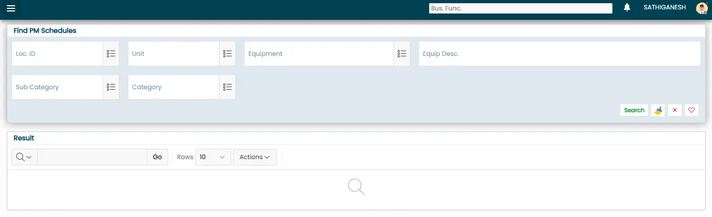
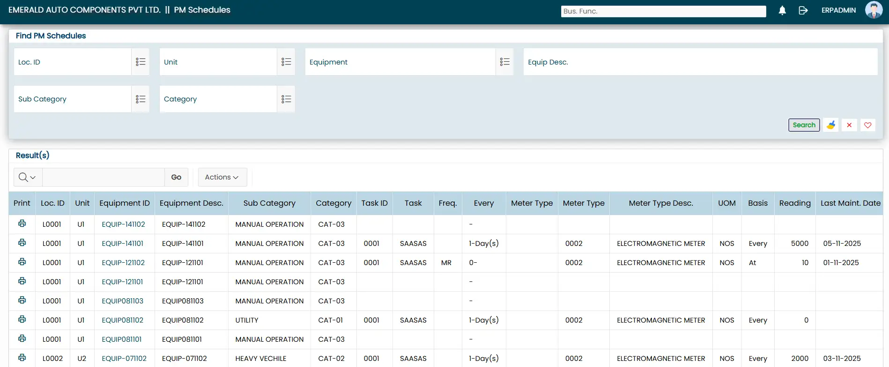
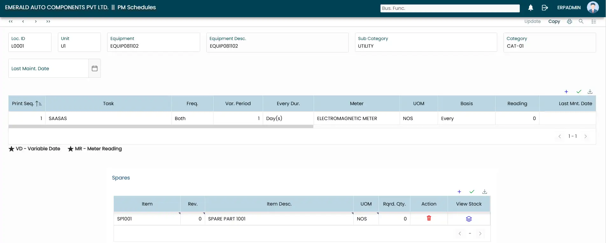

<div data-category="Plant Maintenance" data-title="PM Schedules" data-updated="January 27, 2026" data-contributors="RoadmapIT" data-breadcrumb="Home,Plant Maintenance,PM Schedules">
  <div class="page-content">
    <p>A plant maintenance schedule is a plan that outlines the tasks and frequency of maintenance activities for a plant or facility. It is intended to prevent breakdowns, improve performance, and extend the life of equipment and systems.</p>
    <p>The Equipment is activated and the schedule is created based on the variable days or meter reading.</p>
    <h5>Navigation path:</h5>
    <p class="fs-6">Plant Maintenance \ Transactions \ PM Schedules</p>
    
    <ul style="list-style-type: none; align-content: center">
      <li class="mouse-icon">Search screen displays the list of equipments with the relevant details and its status</li>
      <li class="mouse-icon">Click on Search to filter all the records.</li>
    </ul>
    
    <ul style="list-style-type: none; align-content: center">
      <li class="mouse-icon">User can filter the respective documents by entering the search parameters at the header.</li>
      <li class="mouse-icon">Using Search, system displays the results relevant to the search parameters entered.</li>
      <li class="mouse-icon">On -click, the corresponding transaction record will be displayed.</li>
      <li class="mouse-icon">
        Using
        
        icon, entered search parameters can be cleared.
      </li>
      <li class="mouse-icon">
        To close the screen, use
        <i class="bi bi-x fs-4 mx-2 text-danger"></i>
        icon.
      </li>
    </ul>
    
    <ul style="list-style-type: none; align-content: center">
      <li class="mouse-icon">
        Click
        <i class="bi bi-plus fs-4 mx-2 text-primary"></i>
        to add
      </li>
      <li class="mouse-icon">Enter/Select the Task from LOV.</li>
      <li class="mouse-icon">Choose the Frequency Type.</li>
      <li class="mouse-icon">If frequency type is Variable Date (VD) then enter day or month or week or year.</li>
      <li class="mouse-icon">If frequency type is Meter Reading (MR) then note the type of Meter Basis.</li>
      <li class="mouse-icon">The PM schedules will be displayed in the Maintenance dues screen, if the System date is lesser than or equal to the Next Maintenance date.(Sys Date &lt;= Next Maintenance date.)</li>
      <li class="mouse-icon">
        Click
        <i class="bi bi-check-lg fs-4 mx-1 text-success"></i>
        to save
      </li>
    </ul>
  </div>
</div>
